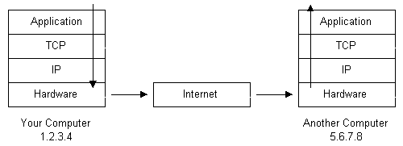
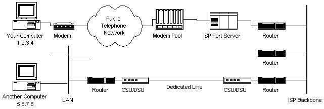
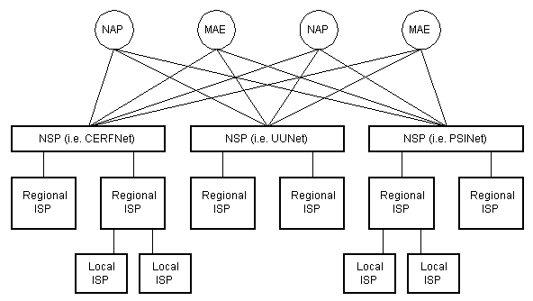
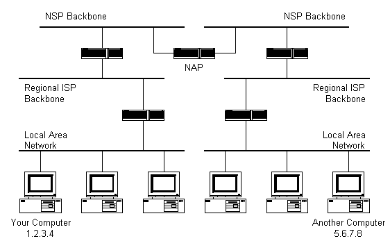

How the Internet Works
January 1, 2015
When one thinks of the Internet, it's easy to get lost in the hardware compenents of this immense system. Computers, routers, servers, cables, and other devices. All these devices together create the physical network of networks that is the Internet. End points in the system, such as your computer, are called clients. Machines that store information on the Internet are called servers. And the machines that connect the two are called nodes. But underlying the hardware is the second essential component of the Internet: protocols.
There are many protocols important for making the Internet function. First, because computers need to send information to other computers, each computer must have a unique address. This addres is known as an Internet Protocol (IP) address. An IP address can be assigned to you temporarily via your Internet Service Provider (ISP).
Now that our computer has an IP address, how does it transmit a message to another computer? The message must be translated from, say alphanumeric text, to electronic signals, transmitted over the Internet in small packets, and then translated back. This is accomplished through a protocol stack. Most computers have this built into their operating system. The protocol stack used for the Internet is usually referred to as the TCP/IP protocol stack because those are the two major protocols. The protocol layers are listed below:
- Application Protocols Layer: protocols specific to applications such as WWW and FTP
- Transmission Control Protocol Layer: TCP direcs packets to a specific application on a computer using a port number
- Internet Protocol Layer: IP directs packets to a specific computer using an IP address
- Hardware Layer: converts binary packet data to network signals and back
Looking at the picture below, it's easy to see the path of a message being sent from one computer to another.
As the message is sent downward through the stack, it is broken up into smaller packets of data. Packets go through the application layer and to the TCP layer. There they are assigned a port number, which is used to know which program on the destination computer needs to receive the message. The IP layer assigns each packet the destination IP address. The hardware layer turns the message into electronic signals that are then transmitted over the Internet. Eventually a packet reaches its destination, where it moves up the protocol stack and is reconfigured into the appropriate form.
How do packets get sent accross the Internet? Your computer is connected to a modem in your home. This modem connects to your ISP. The ISP has a dedicated modem pool for customers sending a packet of information. A computer controls the flow of data from these modems to a dedicated backbone or line router. This setup is referred to as a port server, because it serves access to the network. So now the packets of information are on the ISP's backbone or a backbone the ISP buys bandwidth from. The packets move through routers and backbones until they find their destination. See the diagram below.
What exactly is a backbone? A backbone is made up of many large networks which interconnect with each other, and are known as Network Service Providers (NSPs). NSPs peer with each other in order to exchange information. Each NSP is required to connect to three Network Access Points (NAPs). At NAPs, packets may move from once NSP backbone to another. NSPs sell bandwitdh to smaller networks, like ISPs. See the diagram below for a hierarchical representation.
How do packets find the correct IP address once they are sent out over this vast network? The answer is with routers and their routing tables. Routers are connected between networks to route packets of information between them. Each router knows about the IP addresses in its sub-networks, but not in networks above it. When a router receives a packet of information, it is able to examine the IP address and scan its own routing tables for a match. If the network containing the IP address is found, the router sends the packet to that network. If the IP address is not found, the router sends the packet to another router higher up the hierarchy. This continues until a packet reaches an NSP backbone. These hold the largest routing tables, so the packet will find the correct backbone and then begin its journey downward through routers until it reaches its destination. In the diagram below, black boxes represent routers, which connect to networks above and below themselves.
Most times, we do not know the exact IP address we want to send a message to, and instead know a webpage, like www.github.com, we'd like to access. (This is a message, but a message requesting the webpage file to be sent to your computer.) In the case of entering a URL, the Domain Name Service (DNS) kicks in. The DNS is a distributed database that keeps track of web address and the correspodning IP address. The database is distributed in that no single server contains the entire database. Instead, servers only contain a subset of the database. If a DNS server does not contain the information requested, the request is redirected to another DNS server. Thus, when you enter a web address in a browser, the browser connects to a DNS server to obtain the IP address. Then the browser connects to the target server and requests the webpage.
To (partially) complete the picture of how the internet works, one must understand Hypertext Transfer Protocol (HTTP). HTTP is the protocol that web browsers and web servers use to communicate with each other. It is an application level protocol because it is used by several applications to talk to one another. When you type a URL into a web browser, assuming it contains a domain name, the browser will connect to a DNS and retrieve the correct IP address. The browser then sends an HTTP request for the desired webpage to the appropriate server. The request is routed through your ISP and backbones, to other servers and down to the correct server. The server checks for the desired page (404 not found happens here), and sends the data back to your browser. The browser examines the page for other elements it needs to download (images, apps) and requests each one idividually from the server. Once all elements are downloaded, the page will be completely displayed in the browser.
Now you know a bit about how the Internet works. It's really as simple as hardware devices connected to each other, equipped with the proper protocols for communicating with each other.